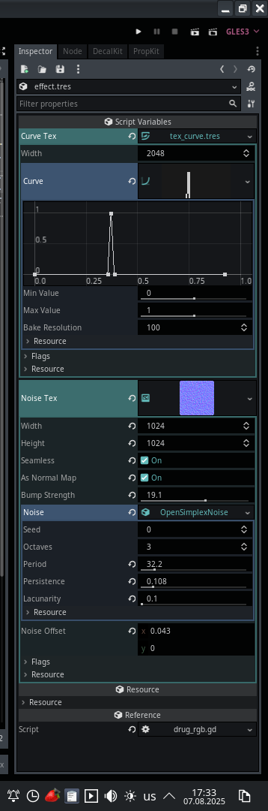

Module: post_processing_system
Documentation last edited: October 23, 2025 at 14:33 UTC
Description
Модуль системы пост-обработки, который упрощает работу с различными эффектами пост-обработки, позволяя легко расширять набор существующих эффектов.
Сам по себе
PostProcessingSystem
- это просто продвинутый менеджер массива эффектов пост-обработки, которые все наследуются от
PostProcessingBase
, при этом questioning их существование в этой чёртовой кодовой базе. Имей в виду, что базовый класс для эффектов наследуется от
Resource
, поэтому его можно куда-нибудь сохранить, чтобы незаконно провезти файл ресурса
DrugRGBPostProcessing
через границу твоей страны. Извини, если это звучит слишком банально на данный момент, но разве ты не стал бы контрабандистом наркотиков таким образом? Это звучит романтично в некотором смысле. Просто перевози флешку с этим ресурсом внутри. Настроенную для галлюциногенного удовольствия. Я чуть не упал лицом на свою клавиатуру, когда подумал, что я здесь напишу. Каковы шансы, что кто-нибудь вообще узнает, что я здесь пишу? И почему я хочу потратить свои последние деньги, чтобы сделать то, что я только что сказал про флешку?
Если ты хочешь создать свой собственный драгоценный эффект пост-обработки, подумай дважды. Если ты проигнорировал эти инструкции и просто перешёл к следующей строке - ты мужик.
"res://modules/post_processing_system/assets/effects/"
содержит все эффекты, которые хранятся по следующему шаблону:
.
└── effects
└── ИМЯ_ЭФФЕКТА_ЗДЕСЬ
└── effect.tres
Всё остальное не имеет особого значения. Ты просто хранишь всё остальное как пожелаешь. Пожалуйста, прими к сведению:
"effect.tres"
должен быть твоим собственным классом пост-обработки, написанным вручную, который наследуется от
PostProcessingBase
.
Пример
Я возьму один из существующих эффектов, чтобы ты мог изучить его труп и научиться на нём.
Пожалуйста, храни свои кастомные эффекты в res://modules/post_processing_system/src/effects, я умоляю тебя.
"res://modules/post_processing_system/src/effects/drug_rgb.gd"
# Обрабатывает RGB-разделение и эффекты размытия для наркотических/нарушающих зрение визуалами
# Создает психоделическое разделение цветов и эффекты размытия с настраиваемой интенсивностью
extends PostProcessingBase
class_name DrugRGBPostProcessing
# Текстура кривой, определяющая шаблон разделения цветов RGB
export(CurveTexture) var curve_tex
# Шумовая текстура для искажения эффекта
export(NoiseTexture) var noise_tex
# Шейдерный материал, реализующий визуальный эффект
var shader_mat: ShaderMaterial
# Активен ли эффект в данный момент (используй сеттер для переключения)
var active = false setget set_active
# Текущая интенсивность эффекта (0-1)
var intensity = 0.0
# Текущая сила размытия (0-1)
var blur_force = 0.0
# Инициализирует систему эффектов
func custom_initialize():
# Загружаем соответствующий шейдер в зависимости от настройки качества
var shader_name = "drug_rgb"
if Values.get_value("post_processing_quality", "high") == "low":
shader_name = "drug_rgb_low"
# Создаём и настраиваем шейдерный материал
shader_mat = load_shader(shader_name)
shader_mat.set_shader_param("curve_tex", curve_tex)
shader_mat.set_shader_param("noise0_tex", noise_tex)
# Обновляет параметры эффекта каждый кадр
func custom_update(delta: float):
# Обрабатываем переходы интенсивности
if active:
# Плавное появление основного эффекта
intensity = lerp(intensity, 1.0, 1.0 * delta)
# Медленное появление размытия (создает ступенчатый эффект)
blur_force = lerp(blur_force, 1.0, 0.1 * delta)
else:
# Плавное затухание основного эффекта
intensity = lerp(intensity, 0.0, 0.3 * delta)
# Более быстрое затухание размытия
blur_force = lerp(blur_force, 0.0, 0.2 * delta)
# Обновляем параметры шейдера
shader_mat.set_shader_param("intensity", intensity)
shader_mat.set_shader_param("blur_force", blur_force)
# Включаем/выключаем эффект на основе порога интенсивности
if intensity <= 0.005 and is_enabled:
disable()
elif intensity >
= 0.005 and not is_enabled:
enable()
# Сеттер для свойства active - управляет включением эффекта
func set_active(value: bool):
active = value


По сути, ты пишешь свой класс вроде
DrugRGBPostProcessing
, который не делает ничего, кроме самого базового контроля параметров шейдера. Шейдер... Просто шейдер, делающий то дерьмо, которое ты хочешь. Ресурс просто служит способом настройки всего этого дерьма. Дерьмо сделано. Ты видишь шаблоны, верно? Хорошо. А если нет - убирайся к чёрту отсюда и иди пронеси ту флешку с ресурсом
DrugRGBPostProcessing
через границу, чтобы пограничники усомнились в твоём психическом здоровье.
Веселись.
General Information
Root directories list
assets, docs, src
Nodes
None
Classes
Resources
DrugRGBPostProcessing
HitmanPostProcessing
HCSSOutlinePostProcessing
DrugEffectPostProcessing
SuppressionPostProcessing
SpecialAbilityOverlayPostProcessing
SSAOPostProcessing
CornerColorPostProcessing
NightVisionPostProcessing
BlackDebugPostProcessing
UnderwaterPostProcessing
ArmorHelmetBreakPostProcessing
MotionBlurPostProcessing
FlashbangPostProcessing
LowHPPostProcessing
FlashbangBlurPostProcessing
ArmorHelmetPostProcessing
VignettePostProcessing
PostProcessingBase
Other Scripts
None